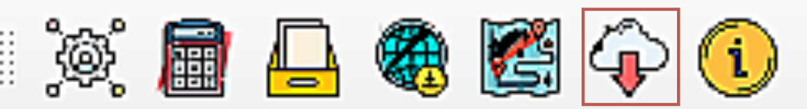
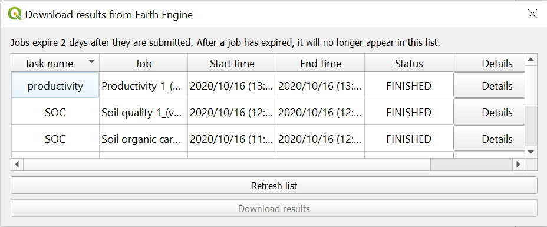
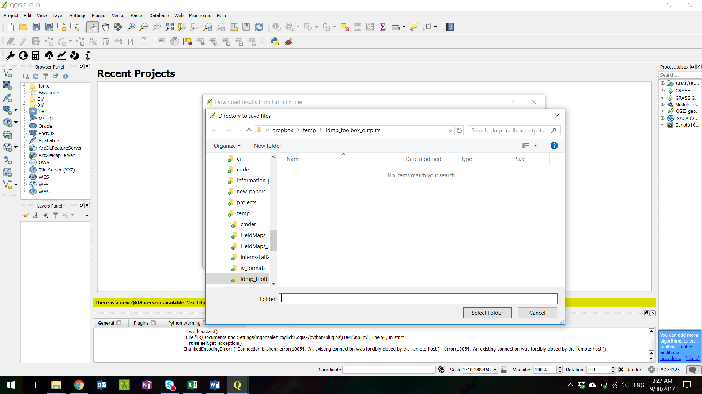

Voir et télécharger les résultats¶
Once you have submitted a calculation using LDMS, it is sent to Google Earth Engine to run the calculations in the cloud. To view the Google Earth Engine (GEE) tasks you have running, and to download your results, select the cloud with the arrow facing down icon highlighted above. This will open up the Download results from Earth Engine dialog box.
Cliquer sur Actualiser la liste pour afficher toutes les tâches que vous avez soumises et leur statut.
Les utilisateurs peuvent voir leurs tâches actuelles et précédentes ici. le tableau affiche le nom de la tâche fourni par l’utilisateur, l’analyse en cours (travail), l’heure de début et de fin de l’exécution et de l’achèvement de la tâche et si la tâche a réussi ou non. La page Détails décrit les différentes options choisies par l’utilisateur pour chaque tâche.
Pour télécharger les résultats sur l’ordinateur une fois la tâche terminée, cliquez sur la tâche pour laquelle vous souhaitez télécharger les résultats, puis cliquez sur « Télécharger les résultats ». Dans la fenêtre qui apparaît, choisissez l’emplacement dans lequel enregistrer le téléchargement. Notez que certains téléchargements peuvent consister en plusieurs fichiers - tous ces fichiers doivent être conservés ensemble si les résultats sont déplacés vers un emplacement différent sur l’ordinateur (ou enregistrés sur une clé USB).
